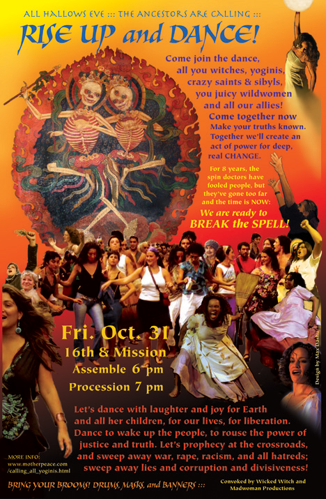

I created this poster for an All Hallows Eve procession through the streets of San Francisco, convoked by Vicki Noble (who took the photo of dancing skeleton dakinis in Tibet). Along with Krissy Keefer, Starhawk & others, A very limited edition of signed prints is available for $25. (Only twenty of these collectibles remain, printed in vivid colors on heavy stock.) Max Dashú For freedom, justice, peace, respect for Mother Earth and all beings More posters by Max Dashú Our Reproductive Rights! poster |
 |